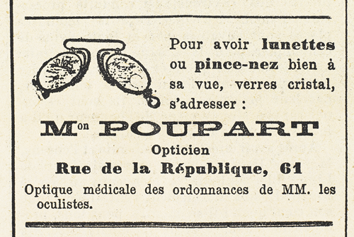

– Pourquoi voulez-vous sortir ? Quelles raisons ? Vous connaissez donc cette personne, et vous voulez l’empêcher… ou bien l’emmener avec vous ?… Quoi ?… Répondez donc ?…
Beaumagnan ne lâchait pas la poignée, tandis que Josine essayait de le retenir. Voyant qu’elle n’y parvenait pas, elle se tourna vers Léonard et, de sa main libre, lui montra l’épaule gauche de Beaumagnan avec un geste qui ordonnait à la fois de frapper et de frapper sans brusquerie. En une seconde Léonard tira de sa poche un stylet qu’il enfonça légèrement dans l’épaule de l’adversaire.
Celui-ci grogna : « Ah ! la gueuse… » et s’affaissa sur le dallage.
Elle dit tranquillement à Léonard :
– Aide-moi, et dépêchons-nous.
À eux deux, coupant la corde trop longue qui attachait Raoul, ils lièrent les bras et les jambes de Beaumagnan. Puis, après l’avoir assis et appuyé contre le mur, elle examina la plaie, la recouvrit d’un mouchoir, et dit :
– Ce n’est rien… à peine deux ou trois heures d’engourdissement… Prenons notre poste.
Ils se mirent à l’affût.
Tout cela elle l’exécuta sans hâte, la figure paisible, par gestes aussi mesurés que s’ils avaient été réglés d’avance. Quelques syllabes simplement pour donner des ordres. Mais sa voix, même assourdie, prenait un tel accent de triomphe que Raoul concevait une inquiétude croissante, et qu’il fut sur le point de crier et d’avertir celui ou celle qui, à son tour, allait tomber dans le guet-apens.
À quoi bon ? Rien ne pouvait s’opposer aux décisions redoutables de la Cagliostro. D’ailleurs il ne savait plus que faire. Son cerveau s’épuisait en idées absurdes. Et puis… et puis… il était trop tard. Un gémissement lui échappa : Clarisse d’Étigues entrait.
Jusqu’ici Raoul n’avait ressenti qu’une peur plutôt morale, le danger ne menaçant que lui et la Cagliostro ; pour lui, il se confiait à son adresse et à sa bonne étoile ; pour la Cagliostro, il la savait de taille à se défendre contre Beaumagnan.
Mais Clarisse ! En présence de Joséphine Balsamo, Clarisse était comme une proie livrée aux ruses et à la cruauté de l’ennemi. Et, dès lors, la peur de Raoul se compliqua d’une sorte d’horreur physique qui, réellement, dressait ses cheveux sur sa tête et lui donnait ce que l’on appelle vulgairement la chair de poule. La face implacable de Léonard ajoutait à cette épouvante. Il se souvenait de la veuve Rousselin et de ses doigts tuméfiés.
En vérité, il avait vu juste lorsque, une heure plus tôt, venant au rendez-vous, il devinait que la grande bataille se préparait et qu’elle le mettrait aux prises avec Joséphine Balsamo. Jusqu’ici, simples escarmouches, engagements d’avant-garde. Maintenant, c’était la lutte à mort entre toutes les forces qui s’étaient affrontées, et Raoul s’y présentait, lui, les mains liées, la corde au cou, et avec ce surcroît d’affaiblissement que lui causait l’arrivée de Clarisse d’Étigues.
« Allons, se dit-il, j’ai encore beaucoup à apprendre. Cette situation affreuse, j’en suis à peu près responsable, et ma chère Clarisse une fois de plus est ma victime. »
La jeune fille demeurait interdite sous la menace du revolver que Léonard tenait braqué. Elle était venue allégrement, comme on vient, un jour de vacances, à la rencontre de quelqu’un que l’on a plaisir à retrouver, et elle tombait au milieu de cette scène de violence et de crime, tandis que celui qu’elle aimait demeurait en face d’elle, immobile et captif.
Elle balbutia :
– Qu’y a-t-il, Raoul ? Pourquoi êtes-vous attaché ?
Elle tendait ses mains vers lui, autant pour implorer son aide que pour lui offrir la sienne. Mais que pouvaient-ils l’un et l’autre !
Il remarqua ses traits tirés et l’extrême lassitude de tout son être, et il dut se retenir de pleurer en pensant à la douloureuse confession qu’elle avait faite à son père et aux conséquences de la faute commise. Malgré tout, il lui dit, avec une assurance imperturbable :
– Je n’ai rien à craindre, Clarisse, et vous non plus, absolument rien. Je réponds de tout.
Elle jeta les yeux sur ceux qui l’entouraient, eut la stupeur de reconnaître Beaumagnan sous le masque qui l’étouffait, et interrogea timidement Léonard :
– Que me voulez-vous ? Tout cela est effrayant… Qui m’a fait venir ici ?
– Moi, mademoiselle, dit Joséphine Balsamo.
La beauté de Josine avait déjà frappé Clarisse. Un peu d’espoir la réconforta, comme s’il ne pouvait lui venir de cette femme admirable que de l’aide et de la protection.
– Qui êtes-vous, madame ? Je ne vous connais pas…
– Je vous connais, moi, affirma Joséphine Balsamo, que la grâce et la douceur de la jeune fille semblaient irriter, mais qui dominait sa colère. Vous êtes la fille du baron d’Étigues… et je sais aussi que vous aimez Raoul d’Andrésy.
Clarisse rougit et ne protesta pas. Joséphine Balsamo dit à Léonard :
– Va fermer la barrière. Mets-y la chaîne et le cadenas que tu as apportés, et redresse le vieux poteau tombé, où il y a une pancarte « Propriété privée. »
– Dois-je rester dehors ? demanda Léonard.
– Inutile, dit Joséphine Balsamo, laisse-nous.
Il obéit.
Tour à tour, elle regarda ses trois victimes, toutes trois désarmées et réduites à l’impuissance. Elle était maîtresse du champ de bataille et, sous peine de mort, pouvait imposer ses arrêts inflexibles.
Raoul ne la quittait pas des yeux, tâchant de discerner son plan et ses intentions. Le calme de Josine l’impressionnait plus que tout. Elle n’avait point cette fièvre et cette agitation qui eussent, pour ainsi dire, désarticulé la conduite de toute autre femme à sa place. Aucune attitude de triomphe. Plutôt même un certain ennui, comme si elle eût agi sous l’impulsion de forces intérieures qu’elle n’était pas maîtresse de discipliner.
Pour la première fois, il devinait en elle cette sorte de fatalisme nonchalant que dissimulait d’ordinaire sa beauté souriante, et qui était peut-être l’essentiel même et l’explication de sa nature énigmatique.
Elle prit place à côté de Clarisse, sur l’autre chaise, et, les yeux fixes, la voix lente, avec de la sécheresse et de la monotonie dans l’accent, elle commença :
– Il y a trois mois, mademoiselle, une jeune femme était enlevée furtivement à sa descente du train, et transportée au château de la Haie d’Étigues, où se trouvaient réunis, dans une grande salle isolée, une dizaine de gentilshommes du pays de Caux, dont Beaumagnan, que vous voyez ici, et votre père. Je ne vous raconterai pas tout ce qui fut dit à cette réunion, et toutes les ignominies que cette femme eut à subir de la part de gens qui se prétendaient ses juges. Toujours est-il que, après un simulacre de débats, le soir, ses invités étant partis, votre père et son cousin Bennetot emmenèrent cette femme au bas des falaises, l’attachèrent au fond d’une barque trouée qu’alourdissait un énorme galet, et la conduisirent au large où ils l’abandonnèrent.
Clarisse, suffoquée, balbutia :
– Ce n’est pas vrai ! Ce n’est pas vrai !… Mon père n’aurait jamais fait cela… ce n’est pas vrai !
Sans se soucier de la protestation indignée de Clarisse, Joséphine Balsamo continua :
– Quelqu’un avait assisté, sans qu’aucun des conjurés s’en doutât, à la séance du château, quelqu’un qui épia les deux assassins – il n’y a pas d’autre terme, n’est-ce pas ? – s’accrocha à la barque et sauva la victime dès qu’ils se furent éloignés. D’où venait-il, celui-là ? Tout porte à croire qu’il avait passé la nuit précédente et la matinée dans votre chambre, accueilli par vous, non pas comme un fiancé, puisque votre père lui avait refusé ce titre, mais comme un amant.
Les accusations et les injures heurtaient Clarisse comme des coups de massue. Dès la première minute, elle avait été hors de combat, incapable de résister ni même de se défendre.
Toute pâle, défaillante, elle se courba sur sa chaise, en gémissant :
– Oh ! madame, que dites-vous ?
– Ce que vous avez dit vous-même à votre père, repartit la Cagliostro, les conséquences de votre faute rendant nécessaire l’aveu que vous lui avez fait avant-hier soir. Ai-je besoin de préciser davantage et de vous dire ce qu’il est advenu de votre amant ? Le jour même où il vous déshonorait, Raoul d’Andrésy vous abandonnait pour suivre la femme qu’il avait sauvée de la mort la plus affreuse, se dévouait à elle corps et âme, se faisait aimer d’elle, vivait de sa vie, et lui jurait de ne jamais vous revoir. Le serment fut fait de la façon la plus catégorique : « Je ne l’aimais pas, a-t-il dit. C’était une amourette. C’est fini. »